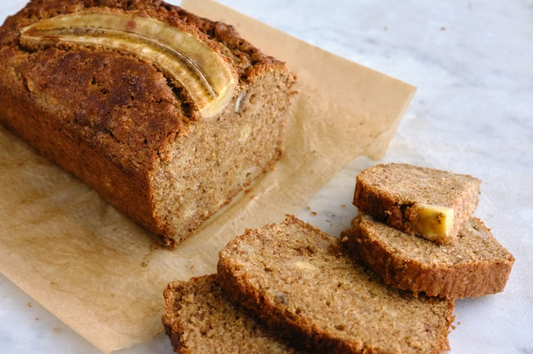

Banana Bread Recipe

A little bit about..
You will make banana bread at its best. Lots of bananas and a hint of almond and almond liqueur make a delicious banana bread--I love it served with butter.
Ingridients
- Cooking spray
- 2 cups of all-purpose flour
- 1 teaspoon salt
- 1 teaspoon baking soda
- 3/4 cup brown sugar
- 1/2 cup butter
- eggs
- 3 drops almond extract
- 3 drops amaretto
- 5 ripe bananas
Steps
- Preheat oven to 350 degrees F (175 degrees C). Spray a loaf pan with cooking spray.
- Whisk flour, salt, and baking soda together in a bowl.
- Mix bananas, brown sugar, butter, eggs, almond extract, and amaretto together in a separate bowl. Add flour mixture; mix just until flour is incorporated, about 1 minute. Transfer mixture to the prepared loaf pan.
- Bake in the preheated oven until a toothpick inserted into the center comes out clean, about 1 hour. Let cool before serving, about 30 minutes.